C1 System Context Diagram
ระบบของเราไม่ได้ทำงานด้วยตัวคนเดียว แต่มีการเชื่อมต่อกับบริการอื่นเพื่อลดภาระงานและเพิ่มประสิทธิภาพ:
C1: System Context Diagram

ดู Mermaid source
flowchart TD
%% การตั้งค่า Class สีต่างๆ (กำหนด color:black ตามคำสั่ง)
classDef mainSystem fill:#0050ef,stroke:#001DBC,color:black
classDef userFill fill:#fff2cc,stroke:#d6b656,color:black
classDef adminFill fill:#dae8fc,stroke:#6c8ebf,color:black
classDef extFill fill:#f5f5f5,stroke:#666666,color:black
%% Title Area
subgraph Context [C1: System Context Diagram]
direction TB
%% Nodes (โหนดต่างๆ)
User("General User<br>[Person]")
System("Mobile App: Scam Image Detection<br>[Software System]<br>Allows users to upload images to detect forgery,<br>AI generation, and existing scams.")
Admin("Admin<br>[Person]")
ExtSearch("Reverse Image Search Provider<br>[External System]<br>Google Vision API / Bing Visual Search<br>(Used to find similar images on the web)")
ExtNotify("Push Notification Service (Phase 2)<br>[External System]<br>Firebase Cloud Messaging (FCM)<br>(Sends alerts/results to mobile)")
%% Relationships (เส้นเชื่อมโยง)
User -- "1. อัปโหลดรูปเพื่อตรวจสอบ<br>2. ดูรายงานความเสี่ยง" --> System
System -- "ส่ง URL รูปภาพ / ข้อมูลไบนารี" --> ExtSearch
ExtSearch -.->|"ส่งคืน URL รูปภาพที่คล้ายกัน"| System
System -- "ส่งข้อมูลการแจ้งเตือน (Payload)" --> ExtNotify
Admin -- "ตรวจสอบรูปที่ถูกรายงาน /<br>อัปเดตข้อมูลโมเดล" --> System
end
%% Apply Styles (การระบายสี)
class System mainSystem
class User userFill
class Admin adminFill
class ExtSearch,ExtNotify extFill
1. ระบบหลัก (The Software System)
- Mobile App: Scam Image Detection :
- หน้าที่: เป็นแอปพลิเคชันบนมือถือที่ให้ผู้ใช้เข้ามาอัปโหลดรูปภาพที่น่าสงสัย ระบบจะทำการวิเคราะห์ เช็คค่า EXIF/GPS ข้อมูลรายละเอียดของไฟล์รูปภาพและข้อมูลพิกัด (ถ้ามี), เช็คการตัดต่อระดับพิกเซล (Semantic Segmentation), อ่านข้อความในภาพเพื่อหา Keyword อันตราย, วิเคราะห์ภาพเพื่อดูว่าเป็นภาพที่สร้างจาก AI หรือไม่
2. ผู้ใช้งาน (People)
-
General User (ผู้ใช้งานทั่วไป):
- คือคนธรรมดาที่อาจจะได้รับรูปภาพแปลกๆ (เช่น สลิปโอนเงินปลอม, รูปโปรไฟล์หลอกลงทุน)
- การกระทำ: ส่งรูปเข้ามาในแอป (Upload) และรอรับผลการตรวจสอบ (View Report) เพื่อดูว่ารูปนั้นเสี่ยงแค่ไหน
-
Admin (ผู้ดูแลระบบ):
- คือทีมงานหลังบ้าน หรือนักวิจัย
- การกระทำ: เข้ามาดูรูปที่ถูก Report เข้ามา เพื่อยืนยันความถูกต้อง หรือนำข้อมูลใหม่ๆ ไปอัปเดตให้โมเดล AI ฉลาดขึ้น (Updates model data)
3. ระบบภายนอก (External Systems)
ระบบของเราไม่ได้ทำงานด้วยตัวคนเดียว แต่มีการเชื่อมต่อกับบริการอื่นเพื่อลดภาระงานและเพิ่มประสิทธิภาพ:
-
Reverse Image Search Provider :
-
คืออะไร: บริการค้นหารูปภาพระดับโลก เช่น Google Vision API หรือ Bing Visual Search
-
ทำไมต้องใช้: ระบบของเราส่งรูปไปถามเจ้านี้ว่า "เคยเห็นรูปนี้ที่ไหนในเน็ตไหม?" (Send URL/Binary)
-
สิ่งที่ได้กลับมา: แหล่งที่มาของภาพ (Similar URLs) เช่น ถ้าเป็นรูปโปรไฟล์สาวสวย แต่ไปเจอว่าเป็นดาราเกาหลี ก็แสดงว่าปลอมแน่นอน
-
Push Notification Service (Phase 2 — v1 ใช้ polling + in-app):
-
คืออะไร: บริการส่งการแจ้งเตือน (เริ่ม Phase 2)
-
ทำไมต้องใช้: การวิเคราะห์รูปภาพอาจใช้เวลา (2-10 วินาที หรือมากกว่า) เราจึงไม่ให้ผู้ใช้รอนิ่งๆ หน้าจอ แต่เมื่อระบบประมวลผลเสร็จ จะส่งข้อมูล (Payload) ไปที่ FCM เพื่อเด้งแจ้งเตือนที่มือถือผู้ใช้ว่า "ตรวจสอบเสร็จแล้ว!"
สรุปขั้นตอนการทำงาน (Workflow Scenario)
- User อัปโหลดรูปสลิปโอนเงินที่สงสัยเข้ามาใน App
- App ส่งรูปนั้นไปเช็คกับ Google/Bing (External) ว่ารูปนี้ไปก๊อปมาจากเว็บไหนไหม
- App ประมวลผลภายใน (เช็คการตัดต่อ/AI)
- เมื่อได้ผลลัพธ์ครบ App แจ้งเตือนผู้ใช้ในแอป (v1 polling; FCM เป็น Phase 2)
- User เปิดดูผลลัพธ์คะแนนความเสี่ยง
- (Optional) หากเป็นเคสใหม่ Admin จะเข้ามาตรวจสอบข้อมูลเพื่อปรับปรุงระบบในภายหลัง